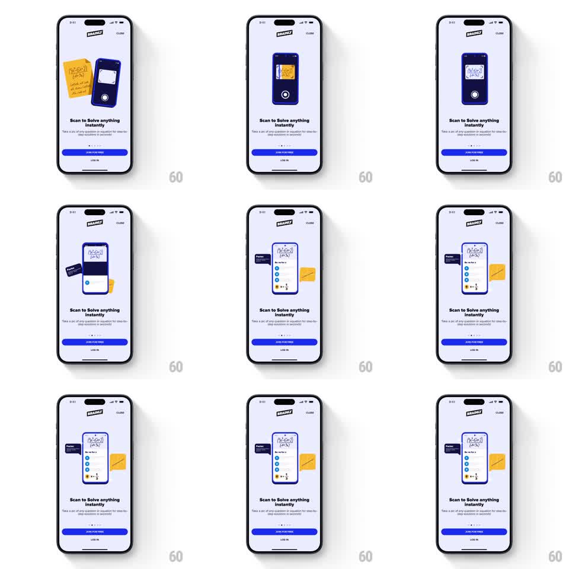

Media
Frame-by-frame

Rebuild this animation 1:1: Brainly's scan-to-solve onboarding story - on a lavender screen, a phone snaps a photo of a handwritten equation, the equation lands inside the phone's screen, and a solved-steps card slides out with a Solution chip popping on top.

Rebuild this animation 1:1: Brainly's scan-to-solve onboarding story - on a lavender screen, a phone snaps a photo of a handwritten equation, the equation lands inside the phone's screen, and a solved-steps card slides out with a Solution chip popping on top. ## Integration Integration: stack-agnostic spec - springs given as stiffness/damping, timed motions as duration + curve; map every value to your framework and animation library of choice. ## Scene Light lavender onboarding screen: Brainly logo, CLOSE, headline "Scan to Solve anything instantly", page dots, JOIN FOR FREE and LOG IN fixed below. The stage: a yellow sticky note with a handwritten equation beside a dark blue phone in camera mode; the phone's screen then shows the captured equation; finally a white solution card extends from the phone with a dark Solution chip, checkmarked steps, and the sticky note peeled aside. ## Motion spec Pattern: capture-and-reveal sequence with staggered card pop-ups. - Beat 1: the sticky note and phone float with a shared gentle drift (translateY +-5px, 2s sine, slightly out of phase). - The capture: the phone's shutter button pulses once (scale 1 to 1.2 and back, 200ms), a brief flash/shutter frame, and the equation shrinks off the sticky note into the phone screen (arc path, ~350ms, ease-in). - Beat 3: the white solution card slides up out of the phone (spring stiffness ~280, damping ~22), its checkmark steps stagger in (70ms apart), the dark Solution chip pops on top (stiffness ~400, damping ~16), and the sticky note swings aside and slightly rotates (like being peeled away). - Holds ~1.5s on the solved state; fixed UI never moves. ## Calibration - The equation's arc from paper to screen is the storytelling beat - a straight fade kills it. - The shutter pulse comes before the capture, never after. ## Reduced motion Crossfade between the three states (250ms); no traveling equation. ## Don't miss - The phone is dark blue and the sticky note stays yellow throughout - those two colors carry the scene against the lavender. - Steps appear top-down in solving order, not all at once.